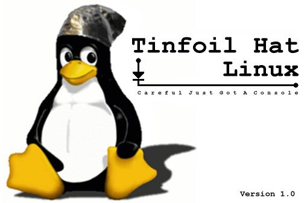

What is Tinfoil Hat linux ?
It started as a secure, single floppy, bootable Linux distribution for storing PGP keys and then encrypting, signing and wiping files. At some point it became an exercise in over-engineering.
Tinfoil hat is useful if:
- You're using a computer that could have a keystroke logger installed.
http://www.keyghost.com is an example of a tiny & cheap hardware logger.
- You need to use your personal GPG keys at work, school or a web hosting facility where you don't trust or own the equipment.
- If you maintain a PGP Certificate Authority or signing key and have to have a safe place to use the CA key.
- If you simply don't want to risk putting a PGP key on a hard drive
where someone else might have access to it.
- The Illuminati are watching your computer, and you need to use morse code
to blink out your PGP messages on the numlock key.
New testing version of tinfoilhat
If you want to play with the new 2.0 pre-release, click here
Tinfoil hat linux files
FAQ
Check out the tinfoil hat linux faq
Links
Airsnarf Rogue Squadron v0.1